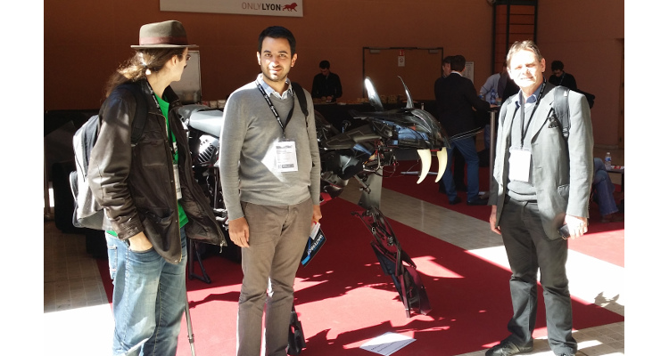

Soirée #geekbidouille de Mars
Sébastien NEDJAR
Soirée #geekbidouille de Mars

- Actualités
- Nicolas Ferre présente la toute nouvelle carte Atmel SAMA5 Xplained.
- Didier Fronek nous montrera les capacités de la carte à travers plusieurs réalisation qu’il a réalisé.
- Morgane Alonso présentera la distribution linux Lakka pour marier rétrogaming et raspberry pi.
- Jonathan fera un point de l’avancée de son projet de bobine de tesla musicale.
- Formation des ERIC du Pays d’Aix
- Hackathon des bidouilleurs à Devoxx
- Mise en place du Wiki du L.A.B
- Délégation au Salon Innorobo
- Intervention Lycée Ampère
Hackathon des bidouilleurs à Devoxx
- 3j de bidouille en parallèle d’une conférence de javaiste
- Objectif faire un orchestre geek en mode DIY
- Notre contribution sera de fabriquer des instruments vraiment vraiment étranges.
Hackathon des bidouilleurs à Devoxx
Mise en place du Wiki du L.A.B
- Lieu de centralisation de la documentation
- Espace vivant pour partager des contenus en cours de construction
Délégation au Salon Innorobo
- Le mercredi 19 Mars, une délégation de 5 Makers du LAB était au salon internationnale
de Robotique à Lyon.
- Beaucoup de robots surprenants.
- Des rencontres prométeuses.
Délégation au Salon Innorobo
Délégation au Salon Innorobo
Délégation au Salon Innorobo

Intervention Lycée Ampère
- Sensibilisation à l’impression 3D pour les élèves du lycée
- 6 classes sensibilisées
- Beaucoup de proposition d’impression de coques Iphone
- Surtout des requins et des pieuvres imprimées sur notre vénérable Makerbot
Intervention Lycée Ampère

- Formation Arduino avec l’ENSP d’Arles
- Fin de la formation ERIC3D
- Devoxx
- Atelier modélisation 3D
- Atelier développement embarqué